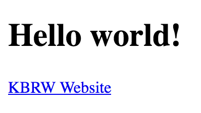
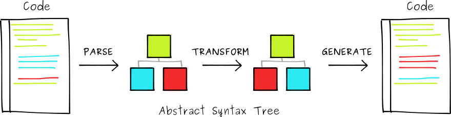

<style>
.markdown-body {
  box-sizing: border-box;
  min-width: 200px;
  max-width: 980px;
margin: 0 auto;
padding: 45px;
}

@media (max-width: 767px) {
  .markdown-body {
padding: 15px;
  }
}
</style>
<article class="markdown-body">
<!DOCTYPE html>
<html>
<head>
  <title>chap3/README.md</title>
  <link rel="stylesheet" href="../.github-markdown-css/github-markdown.css">
</head>
<body>
<h1>
<a id="user-content-chapter-3-the-four-horsemen-of-the-apocalypse-react-webpack-babel-and-jsxz" class="anchor" href="#chapter-3-the-four-horsemen-of-the-apocalypse-react-webpack-babel-and-jsxz" aria-hidden="true"><span aria-hidden="true" class="octicon octicon-link"></span></a>Chapter 3: The Four Horsemen of the Apocalypse: React, Webpack, Babel and JSXZ</h1>
<p>This chapter will introduce you to React and the tool chain that goes with it.</p>
<h2>
<a id="user-content-step-0---the-white-rider-react" class="anchor" href="#step-0---the-white-rider-react" aria-hidden="true"><span aria-hidden="true" class="octicon octicon-link"></span></a>Step 0 - The White Rider: React</h2>
<h3>
<a id="user-content-the-righteous-vanilla-js" class="anchor" href="#the-righteous-vanilla-js" aria-hidden="true"><span aria-hidden="true" class="octicon octicon-link"></span></a>The Righteous Vanilla JS</h3>
<p>Alongside HTML and CSS, <a href="https://en.wikipedia.org/wiki/JavaScript" rel="nofollow"><strong>Javascript</strong></a> is one of the core technologies of the World Wide Web.<br>
It enable interactive web pages and is an essential part of web applications. The vast majority of websites use it, and major web browsers have a dedicated JavaScript engine to execute it.</p>
<hr>
<p><strong>Exercice:</strong></p>
<p>We will explore its possibilities with a little example.<br>
Create a <code>web</code> subdirectory inside your <strong>mix</strong> project, we will work from here.</p>
<p>First, let's create a really simple <strong>HTML</strong> file called <code>index.html</code></p>
<ul>
<li>Create a big header with the text "Hello world" in it</li>
<li>Add a link to the website <code>kbrw.fr</code> with the text "KBRW Website"</li>
</ul>
<p>Open it with your favorite web browser and you should obtain something like this:
<a href="./img/the_righteous.png" target="_blank" rel="noopener noreferrer"></a></p>
<p>Now let's add some Javascript in it.</p>
<ul>
<li>Add a button with the text <code>Click me</code>
</li>
<li>When you will click on this button, the page should display an alert with the content <code>Hello world !</code>
</li>
<li>Your Javascript code <strong>must</strong> be inside a file named <code>script.js</code>
</li>
<li>The alert code <strong>must</strong> be inside a Javascript function</li>
</ul>
<p>And here it is ! You have a great web page, with some JS code executed inside it ! Bravo !</p>
<hr>
<h3>
<a id="user-content-react-the-infectuous-js-library" class="anchor" href="#react-the-infectuous-js-library" aria-hidden="true"><span aria-hidden="true" class="octicon octicon-link"></span></a>React, the Infectuous JS Library</h3>
<p>To help us create wonderful User Interface, we`re gonna use a library named <strong>React</strong>.<br>
<em>Go and read more about it <a href="https://reactjs.org/" rel="nofollow">here</a></em></p>
<hr>
<p><strong>Exercice:</strong></p>
<p>We're gonna use <strong>React</strong> to manipulate the DOM of our web page.</p>
<ul>
<li>Let's import the library inside our index.html
<ul>
<li>Add the following code <code>&lt;script crossorigin src="https://unpkg.com/react@16/umd/react.production.min.js"&gt;&lt;/script&gt;</code>
</li>
<li>Do the same for <code>https://unpkg.com/react-dom@16/umd/react-dom.production.min.js</code>
</li>
<li>This will import the script <code>reac.production.min.js</code> from the <code>unpkg.com</code> website</li>
</ul>
</li>
<li>Now, in our <code>script.js</code> file, change the function that used to create an alert so that instead it will create a new <code>div</code> with the content <code>Hey I was created from React!</code>
</li>
<li>You <strong>must</strong> use the function <code>React.createElement</code>
</li>
<li>Create an empty <code>div</code> with the <code>id=root</code>, you will render your element inside it using <code>ReactDOM</code>
</li>
</ul>
<p><em>Play a little bit with it !</em></p>
<hr>
<h3>
<a id="user-content-as-empire-prosperity-jsx" class="anchor" href="#as-empire-prosperity-jsx" aria-hidden="true"><span aria-hidden="true" class="octicon octicon-link"></span></a>As Empire prosperity, JSX</h3>
<p><em>According to Edward Bishop Elliott's interpretation, that the Four Horsemen represent a prophecy of the subsequent history of the Roman Empire, the white color of this horse signifies triumph, prosperity and health in the political Roman body</em></p>
<p>So, pretty cool han ? :) Ready to create Web App with 10000 calls to <code>React.createElement</code> ? :)</p>
<p>Don't worry, <strong>React</strong> thought about you ! <a href="https://reactjs.org/docs/introducing-jsx.html" rel="nofollow">JSX</a> is here to save the day.</p>
<p>It is a <strong>syntax extension</strong> to JavaScript.<br>
It allows you to write code like <code>&lt;div&gt;&lt;h1&gt;Hello&lt;/h1&gt;&lt;/div&gt;</code> <strong>INSIDE you JS script</strong>.</p>
<p>Let's go, write some <strong>JSX</strong> inside your <code>script.js</code> file and see what happened !</p>
<p>Perfect right ? No ? Got this <code>SyntaxError: expected expression, got '&lt;'</code> ? :/<br>
It's because <strong>JSX is a syntax extension</strong>, and not actual JS.</p>
<p>Javascript does not natively support JSX syntax. We're gonna have to use some new tools to support it.</p>
<h3>
<a id="user-content-lets-get-ready-for-war" class="anchor" href="#lets-get-ready-for-war" aria-hidden="true"><span aria-hidden="true" class="octicon octicon-link"></span></a>Let's get ready for War</h3>
<h4>
<a id="user-content-nodejs-and-npm" class="anchor" href="#nodejs-and-npm" aria-hidden="true"><span aria-hidden="true" class="octicon octicon-link"></span></a>NodeJS and NPM</h4>
<p>To <strong>transform</strong> our Javascript so that it can support JSX, we're gonna use tools like <a href="https://webpack.js.org/" rel="nofollow">Webpack</a> by the intermediary of <a href="https://www.npmjs.com/" rel="nofollow">NPM</a> and <a href="https://nodejs.org/en/" rel="nofollow">NodeJS</a>.</p>
<p>Install NodeJS, following the way recommended for your Operating System.</p>
<p>Now verify that everything went well and try:</p>
<div class="highlight highlight-source-shell"><pre>    $<span class="pl-k">&gt;</span> npm  
    $<span class="pl-k">&gt;</span> node</pre></div>
<p>If this commands are working, that's it your done installing NodeJS and NPM !</p>
<h4>
<a id="user-content-react" class="anchor" href="#react" aria-hidden="true"><span aria-hidden="true" class="octicon octicon-link"></span></a>React</h4>
<p>We will create a <strong>React</strong> project, using <code>npm</code>, and place it inside our <strong>mix</strong> project, in the folder <code>web</code></p>
<div class="highlight highlight-source-shell"><pre>  $<span class="pl-k">&gt;</span> npm init react-app web/  
  $<span class="pl-k">&gt;</span> ls  
  node_modules  package.json  package-lock.json  public  README.md  src</pre></div>
<p>We need to modify the architecture of our project compared to a common <strong>React</strong> application.<br>
You can remove the following directories and files:</p>
<ul>
<li>
<p><code>public/</code> -&gt; we don't need <strong>HTML</strong> examples</p>
</li>
<li>
<p><code>src/</code> -&gt; we don't need source example</p>
</li>
<li>
<p><code>.gitignore</code> -&gt; we are already in a git</p>
</li>
<li>
<p><code>.git/</code> -&gt; idem</p>
</li>
<li>
<p><code>README.md</code> -&gt; no need of it</p>
<h4>
<a id="user-content-dependencies" class="anchor" href="#dependencies" aria-hidden="true"><span aria-hidden="true" class="octicon octicon-link"></span></a>Dependencies</h4>
</li>
</ul>
<p>All the dependencies of your <code>npm</code> project are written inside the <a href="https://docs.npmjs.com/creating-a-package-json-file" rel="nofollow"><code>package.json</code> file</a>.</p>
<p>When you install a dependencies, it will write it in this file which is the equivalent of the file <code>mix.exs</code> in a <strong>mix</strong> project. It will save all the dependencies your project needs to be executed. And if you want to reinstall them, just type:</p>
<pre><code>npm install 
</code></pre>
<p>The downloaded dependencies are placed in the folder <strong><code>node_modules</code></strong>. To install a new dependency of your project, you have to type</p>
<pre><code>npm install &lt;dep_name&gt;
</code></pre>
<p>which will place it in the <code>dependencies</code> fields of your <code>package.json</code>.<br>
You can also sometimes want to install <code>devDependencies</code> which are different from the normal ones and not installed in your final project. This solution can be useful for transpilling lib. You can find a more complete answer <a href="https://stackoverflow.com/questions/18875674/whats-the-difference-between-dependencies-devdependencies-and-peerdependencies" rel="nofollow">here</a>.
This dependencies installation method can be archieved by typing</p>
<pre><code>npm install &lt;dep_name&gt; --save-dev
</code></pre>
<p>Let's open our <code>package.json</code> which should looks like:</p>
<div class="highlight highlight-source-js"><pre>{
  <span class="pl-s"><span class="pl-pds">"</span>name<span class="pl-pds">"</span></span><span class="pl-k">:</span> <span class="pl-s"><span class="pl-pds">"</span>web<span class="pl-pds">"</span></span>,
  <span class="pl-s"><span class="pl-pds">"</span>version<span class="pl-pds">"</span></span><span class="pl-k">:</span> <span class="pl-s"><span class="pl-pds">"</span>0.1.0<span class="pl-pds">"</span></span>,
  <span class="pl-s"><span class="pl-pds">"</span>private<span class="pl-pds">"</span></span><span class="pl-k">:</span> <span class="pl-c1">true</span>,                                                              
  <span class="pl-s"><span class="pl-pds">"</span>dependencies<span class="pl-pds">"</span></span><span class="pl-k">:</span> {<span class="pl-k">...</span>}, 
  <span class="pl-s"><span class="pl-pds">"</span>devDependencies<span class="pl-pds">"</span></span><span class="pl-k">:</span> {<span class="pl-k">...</span>},
  <span class="pl-s"><span class="pl-pds">"</span>scripts<span class="pl-pds">"</span></span><span class="pl-k">:</span> {
    <span class="pl-s"><span class="pl-pds">"</span>start<span class="pl-pds">"</span></span><span class="pl-k">:</span> <span class="pl-s"><span class="pl-pds">"</span>react-scripts start<span class="pl-pds">"</span></span>,
    <span class="pl-s"><span class="pl-pds">"</span>build<span class="pl-pds">"</span></span><span class="pl-k">:</span> <span class="pl-s"><span class="pl-pds">"</span>react-scripts build<span class="pl-pds">"</span></span>,
    <span class="pl-s"><span class="pl-pds">"</span>test<span class="pl-pds">"</span></span><span class="pl-k">:</span> <span class="pl-s"><span class="pl-pds">"</span>react-scripts test<span class="pl-pds">"</span></span>,
    <span class="pl-s"><span class="pl-pds">"</span>eject<span class="pl-pds">"</span></span><span class="pl-k">:</span> <span class="pl-s"><span class="pl-pds">"</span>react-scripts eject<span class="pl-pds">"</span></span>
  },
  <span class="pl-s"><span class="pl-pds">"</span>eslintConfig<span class="pl-pds">"</span></span><span class="pl-k">:</span> {
    <span class="pl-s"><span class="pl-pds">"</span>extends<span class="pl-pds">"</span></span><span class="pl-k">:</span> <span class="pl-s"><span class="pl-pds">"</span>react-app<span class="pl-pds">"</span></span>
  },
  <span class="pl-s"><span class="pl-pds">"</span>browserslist<span class="pl-pds">"</span></span><span class="pl-k">:</span> [<span class="pl-k">...</span>]
}</pre></div>
<p>In this JSON you can delete the following fields:</p>
<ul>
<li>private</li>
<li>eslintConfig</li>
<li>browserslist</li>
<li>script</li>
</ul>
<p>We are using <strong>React v15.X</strong>, check that your dependencies are correct !</p>
<div class="highlight highlight-source-js"><pre>{
  <span class="pl-s"><span class="pl-pds">"</span>name<span class="pl-pds">"</span></span><span class="pl-k">:</span> <span class="pl-s"><span class="pl-pds">"</span>web<span class="pl-pds">"</span></span>,
  <span class="pl-s"><span class="pl-pds">"</span>version<span class="pl-pds">"</span></span><span class="pl-k">:</span> <span class="pl-s"><span class="pl-pds">"</span>0.1.0<span class="pl-pds">"</span></span>,
  <span class="pl-s"><span class="pl-pds">"</span>dependencies<span class="pl-pds">"</span></span><span class="pl-k">:</span> {
    <span class="pl-s"><span class="pl-pds">"</span>react<span class="pl-pds">"</span></span><span class="pl-k">:</span> <span class="pl-s"><span class="pl-pds">"</span>^15.6.2<span class="pl-pds">"</span></span>,
    <span class="pl-s"><span class="pl-pds">"</span>react-dom<span class="pl-pds">"</span></span><span class="pl-k">:</span> <span class="pl-s"><span class="pl-pds">"</span>^15.6.2<span class="pl-pds">"</span></span>
  }
}</pre></div>
<h2>
<a id="user-content-step-1---the-read-horse-webpack" class="anchor" href="#step-1---the-read-horse-webpack" aria-hidden="true"><span aria-hidden="true" class="octicon octicon-link"></span></a>Step 1 - The Read Horse: Webpack</h2>
<p><a href="https://webpack.js.org/concepts" rel="nofollow">Webpack</a> is a resource manager.<br>
It will help us process our resources (<code>.js</code>, <code>.png</code>, <code>.html</code>, <code>.css</code>) and bundle them into a static application.<br>
It also provides a simple way to create plugins that will transform and handle this various resources.</p>
<p><strong>READ the documentation at <a href="https://webpack.js.org/concepts" rel="nofollow">https://webpack.js.org/concepts</a></strong></p>
<h3>
<a id="user-content-installation" class="anchor" href="#installation" aria-hidden="true"><span aria-hidden="true" class="octicon octicon-link"></span></a>Installation</h3>
<p>You can install <code>webpack</code> as a dependency in your NPM project.</p>
<div class="highlight highlight-source-shell"><pre>  $<span class="pl-k">&gt;</span> npm install webpack@^3.0.0</pre></div>
<p>To launch webpack, use this command inside your <code>web</code> folder:</p>
<div class="highlight highlight-source-shell"><pre>  $<span class="pl-k">&gt;</span> node node_modules/webpack/bin/webpack.js</pre></div>
<p>You can see that webpack is looking for a configuration file, named <code>webpack.config.js</code>.<br>
This file will give to webpack every bit of information it needs to bundle your web application.<br>
Let's create this file and fill it.</p>
<div class="highlight highlight-source-js"><pre><span class="pl-c1">module</span>.<span class="pl-smi">exports</span> <span class="pl-k">=</span> {
    entry<span class="pl-k">:</span> <span class="pl-s"><span class="pl-pds">'</span>./script.js<span class="pl-pds">'</span></span>,
    output<span class="pl-k">:</span> { filename<span class="pl-k">:</span> <span class="pl-s"><span class="pl-pds">'</span>bundle.js<span class="pl-pds">'</span></span> },
    plugins<span class="pl-k">:</span> [],
    module<span class="pl-k">:</span> {},
  }</pre></div>
<ul>
<li>
<code>entry</code> is the entry point of our web application. Webpack will parse this file and start its dependency graph based on its content.</li>
<li>
<code>output</code> tells webpack where to emit the bundles it creates and how to name these files. It will wrap together all the <code>js</code> inside it.</li>
</ul>
<p>Let's execute Webpack with our <code>script.js</code> file, containing our <code>React</code> application (with <code>React.createElement</code>, no <code>JSX</code> for now).</p>
<p>You should now see a file named <code>bundle.js</code> inside your directory. Open it and try to find your code inside it :)</p>
<h3>
<a id="user-content-javascript-is-dead-long-live-javascript-" class="anchor" href="#javascript-is-dead-long-live-javascript-" aria-hidden="true"><span aria-hidden="true" class="octicon octicon-link"></span></a>Javascript is dead, long live Javascript !</h3>
<p>Until now we only used <strong>Vanilla Javascript</strong>.<br>
The function you defined must likely look like this:</p>
<div class="highlight highlight-source-js"><pre>  <span class="pl-k">function</span> <span class="pl-en">test</span>() {
    <span class="pl-en">console</span>.<span class="pl-c1">log</span>(<span class="pl-s"><span class="pl-pds">"</span>Hello!<span class="pl-pds">"</span></span>)
  }</pre></div>
<p>And you maybe ended up at first creating one looking like this:</p>
<div class="highlight highlight-source-js"><pre>  <span class="pl-k">var</span> <span class="pl-en">test</span> <span class="pl-k">=</span> ()<span class="pl-k">=&gt;</span>{
    <span class="pl-en">console</span>.<span class="pl-c1">log</span>(<span class="pl-s"><span class="pl-pds">"</span>Hello!<span class="pl-pds">"</span></span>)
  }</pre></div>
<p>But it didn't work.<br>
<strong>Why ?</strong> This feature of the language is not yet supported by all browser. It is part of <a href="https://babeljs.io/docs/en/learn/" rel="nofollow"><strong>ECMAScript 2015 features</strong></a>.</p>
<h3>
<a id="user-content-as-empire-division" class="anchor" href="#as-empire-division" aria-hidden="true"><span aria-hidden="true" class="octicon octicon-link"></span></a>As Empire division</h3>
<p>To be able to use the previous code, we will <strong>transform</strong> it into vanilla Javascript.<br>
We're gonna <a href="https://en.wikipedia.org/wiki/Source-to-source_compiler" rel="nofollow"><strong>transpile</strong></a> our code.</p>
<p>To do so, we will use a feature of webpack called <strong>Loaders</strong>.</p>
<p>Taken from the <a href="https://webpack.js.org/concepts#loaders" rel="nofollow">documentation</a> of Webpack (<strong>go read it</strong>):</p>
<pre><code>Out of the box, webpack only understands JavaScript and JSON files.  
Loaders allow webpack to process other types of files and convert them into valid  
modules that can be consumed by your application and added to the dependency graph.
</code></pre>
<p>The transpiler we will use is called <a href="https://babeljs.io/" rel="nofollow"><strong>Babel</strong></a>.</p>
<p>Let's install it into our project, as well as the <strong>ECMAScript 2015</strong> plugin.</p>
<div class="highlight highlight-source-shell"><pre>  $<span class="pl-k">&gt;</span> npm install --save-dev babel-core@^6
  $<span class="pl-k">&gt;</span> npm install --save-dev babel-loader@^7
  $<span class="pl-k">&gt;</span> npm install --save-dev babel-preset-es2015@^6</pre></div>
<p>Now that we have <strong>Babel</strong> and its plugin installed, we need to tell <strong>Webpack</strong> to use it on all our <code>.js</code> files.<br>
Here is our new <code>webpack.config.js</code>:</p>
<div class="highlight highlight-source-js"><pre><span class="pl-c1">module</span>.<span class="pl-smi">exports</span> <span class="pl-k">=</span> {
    entry<span class="pl-k">:</span> <span class="pl-s"><span class="pl-pds">'</span>./script.js<span class="pl-pds">'</span></span>,
    output<span class="pl-k">:</span> { filename<span class="pl-k">:</span> <span class="pl-s"><span class="pl-pds">'</span>bundle.js<span class="pl-pds">'</span></span> },
    plugins<span class="pl-k">:</span> [],
    module<span class="pl-k">:</span> {
      loaders<span class="pl-k">:</span> [
        {
          test<span class="pl-k">:</span><span class="pl-sr"> <span class="pl-pds">/</span><span class="pl-c1">.</span>js<span class="pl-k">?</span><span class="pl-k">$</span><span class="pl-pds">/</span></span>,
          loader<span class="pl-k">:</span> <span class="pl-s"><span class="pl-pds">'</span>babel-loader<span class="pl-pds">'</span></span>,
          exclude<span class="pl-k">:</span><span class="pl-sr"> <span class="pl-pds">/</span>node_modules<span class="pl-pds">/</span></span>,
          query<span class="pl-k">:</span> {
            presets<span class="pl-k">:</span> [<span class="pl-s"><span class="pl-pds">'</span>es2015<span class="pl-pds">'</span></span>]
          }
        }
      ]
    },
  }</pre></div>
<p>Now, replace the declaration of your <code>function</code> inside your <code>script.js</code> file to use the modern declaration <code>() =&gt; {}</code>.<br>
Bundle your application using <strong>Webpack</strong> and take a look in the <code>bundle.js</code> file to see the transpiled code.</p>
<div class="highlight highlight-source-js"><pre><span class="pl-c"><span class="pl-c">//</span>This</span>
  <span class="pl-k">var</span> <span class="pl-en">test</span> <span class="pl-k">=</span> () <span class="pl-k">=&gt;</span> {}

<span class="pl-c"><span class="pl-c">//</span>Became this</span>
  <span class="pl-en">test</span> <span class="pl-k">=</span> <span class="pl-k">function</span> <span class="pl-en">test</span>() {};</pre></div>
<p><strong>Here, <code>'es2015'</code> is a plugin of Babel.</strong></p>
<h3>
<a id="user-content-jsx" class="anchor" href="#jsx" aria-hidden="true"><span aria-hidden="true" class="octicon octicon-link"></span></a>JSX</h3>
<p>Install the <code>react</code> babel's plugin and the <code>jsx</code> dependency.</p>
<div class="highlight highlight-source-shell"><pre>  $<span class="pl-k">&gt;</span> npm install --save-dev babel-preset-react@^6
  $<span class="pl-k">&gt;</span> npm install --save-dev jsx</pre></div>
<p>We also need to tell Webpack to use it: add the <code>'react'</code> preset next to the <code>'es2015'</code> one.</p>
<p>Remove all occurences of the <code>React.createElement</code> function, and use <a href="https://reactjs.org/docs/introducing-jsx.html" rel="nofollow">JSX</a> instead.</p>
<p>Bundle it using Webpack, Babel will transpile your JSX code into vanilla js.</p>
<p><strong>We're all set ! You should be able to use JSX core inside your web application. Go and take a look at your <code>bundle.js</code> file</strong></p>
<h3>
<a id="user-content-debugging" class="anchor" href="#debugging" aria-hidden="true"><span aria-hidden="true" class="octicon octicon-link"></span></a>Debugging</h3>
<p>To help debugging, you can use the <a href="https://webpack.js.org/configuration/devtool/" rel="nofollow">dev-tool</a> option of Webpack.</p>
<h2>
<a id="user-content-step-2---the-black-horse-babel" class="anchor" href="#step-2---the-black-horse-babel" aria-hidden="true"><span aria-hidden="true" class="octicon octicon-link"></span></a>Step 2 - The Black Horse: Babel</h2>
<p>Babel is a <code>source-to-source compiler</code>.<br>
It parses the source code of your project into an <a href="https://en.wikipedia.org/wiki/Abstract_syntax_tree" rel="nofollow">AST</a>, allows plugins to transform it, and generates new code based on the modified version of this <a href="https://en.wikipedia.org/wiki/Abstract_syntax_tree" rel="nofollow">AST</a>.</p>
<p><a href="./img/transpilation.png" target="_blank" rel="noopener noreferrer"></a>
<em>Source: <a href="https://medium.com/@marianococirio/build-your-own-babel-plugin-from-scratch-8db0162f983a" rel="nofollow">medium</a></em></p>
<h3>
<a id="user-content-my-custom-babel-plugin" class="anchor" href="#my-custom-babel-plugin" aria-hidden="true"><span aria-hidden="true" class="octicon octicon-link"></span></a>My Custom Babel plugin</h3>
<p>To really understand how <strong>Babel</strong> works, we're gonna create a little plugin.</p>
<div class="highlight highlight-source-js"><pre><span class="pl-c"><span class="pl-c">//</span>The aim is to transpile a source code like this:</span>
  <span class="pl-k">&lt;</span>Declaration <span class="pl-k">var</span><span class="pl-k">=</span><span class="pl-s"><span class="pl-pds">"</span>test<span class="pl-pds">"</span></span> value<span class="pl-k">=</span>{<span class="pl-c1">42</span>}<span class="pl-k">/</span><span class="pl-k">&gt;</span>
  <span class="pl-k">&lt;</span>Declaration <span class="pl-k">var</span><span class="pl-k">=</span><span class="pl-s"><span class="pl-pds">"</span>kbrw<span class="pl-pds">"</span></span> value<span class="pl-k">=</span><span class="pl-s"><span class="pl-pds">"</span>the best<span class="pl-pds">"</span></span><span class="pl-k">/</span><span class="pl-k">&gt;</span>

<span class="pl-c"><span class="pl-c">//</span>Into</span>
  <span class="pl-k">var</span> test <span class="pl-k">=</span> <span class="pl-c1">42</span>
  <span class="pl-k">var</span> kbrw <span class="pl-k">=</span> <span class="pl-s"><span class="pl-pds">"</span>the best<span class="pl-pds">"</span></span></pre></div>
<p><strong>Read the <a href="https://github.com/jamiebuilds/babel-handbook/blob/master/translations/en/plugin-handbook.md">Babel Plugin Handbook</a></strong></p>
<h4>
<a id="user-content-our-babel-project" class="anchor" href="#our-babel-project" aria-hidden="true"><span aria-hidden="true" class="octicon octicon-link"></span></a>Our Babel project</h4>
<p>Create a new NPM project.</p>
<p>We will need some few dependencies, JSX is one of them.<br>
Indeed, <code>&lt;Declaration/&gt;</code> is not regular JS, this is JSX and we must tell Babel that our plugin is gonna use it.</p>
<p>Our <code>package.json</code> should contains something like this:</p>
<div class="highlight highlight-source-js"><pre>  <span class="pl-s"><span class="pl-pds">"</span>dependencies<span class="pl-pds">"</span></span><span class="pl-k">:</span> {
    <span class="pl-s"><span class="pl-pds">"</span>babel-types<span class="pl-pds">"</span></span><span class="pl-k">:</span> <span class="pl-s"><span class="pl-pds">"</span>^6.20.0<span class="pl-pds">"</span></span>,
    <span class="pl-s"><span class="pl-pds">"</span>babel-plugin-syntax-jsx<span class="pl-pds">"</span></span><span class="pl-k">:</span> <span class="pl-s"><span class="pl-pds">"</span>^6.18.0<span class="pl-pds">"</span></span>
  },
  <span class="pl-s"><span class="pl-pds">"</span>devDependencies<span class="pl-pds">"</span></span><span class="pl-k">:</span> {
    <span class="pl-s"><span class="pl-pds">"</span>babel-core<span class="pl-pds">"</span></span><span class="pl-k">:</span> <span class="pl-s"><span class="pl-pds">"</span>^6.20.0<span class="pl-pds">"</span></span>
  }</pre></div>
<p>Now, having read the <a href="https://github.com/jamiebuilds/babel-handbook/blob/master/translations/en/plugin-handbook.md">Babel Plugin Handbook</a>, you should be able to create a plugin that replace a given <a href="https://babeljs.io/docs/en/babel-types#jsxelement" rel="nofollow">JSXElement</a> by what you need.<br>
<em>The documentation of babel-types might help you <a href="https://babeljs.io/docs/en/babel-types" rel="nofollow">here</a></em></p>
<p><strong>Useful tips:</strong></p>
<ul>
<li>Go and take a look at our homemade preset, called <a href="https://github.com/kbrw/babel-plugin-transform-jsxz/"><strong>JSXZ</strong></a>
</li>
<li>Look into your <code>bundle.js</code> file to see your transpiled code</li>
<li>You can easily see the AST of Babel given some JS code on this website: <a href="https://astexplorer.net/" rel="nofollow">https://astexplorer.net/</a>, <strong>USE IT</strong>.</li>
<li>What is the difference in the AST between this two declarations</li>
</ul>
<div class="highlight highlight-source-js"><pre>  <span class="pl-k">&lt;</span>Declaration <span class="pl-k">var</span><span class="pl-k">=</span><span class="pl-s"><span class="pl-pds">"</span>test<span class="pl-pds">"</span></span> value<span class="pl-k">=</span><span class="pl-s"><span class="pl-pds">"</span>42<span class="pl-pds">"</span></span><span class="pl-k">/</span><span class="pl-k">&gt;</span>
  <span class="pl-k">&lt;</span>Declaration <span class="pl-k">var</span><span class="pl-k">=</span><span class="pl-s"><span class="pl-pds">"</span>test<span class="pl-pds">"</span></span> value<span class="pl-k">=</span>{<span class="pl-c1">42</span>}<span class="pl-k">/</span><span class="pl-k">&gt;</span></pre></div>
<p>I should be able to call you plugin in webpack like this:</p>
<div class="highlight highlight-source-js"><pre>    module<span class="pl-k">:</span> {
      loaders<span class="pl-k">:</span> [
        {
          test<span class="pl-k">:</span><span class="pl-sr"> <span class="pl-pds">/</span><span class="pl-c1">.</span>js<span class="pl-k">?</span><span class="pl-k">$</span><span class="pl-pds">/</span></span>,
          loader<span class="pl-k">:</span> <span class="pl-s"><span class="pl-pds">'</span>babel-loader<span class="pl-pds">'</span></span>,
          exclude<span class="pl-k">:</span><span class="pl-sr"> <span class="pl-pds">/</span>node_modules<span class="pl-pds">/</span></span>,
          query<span class="pl-k">:</span> {
            presets<span class="pl-k">:</span> [<span class="pl-s"><span class="pl-pds">'</span>es2015<span class="pl-pds">'</span></span>, <span class="pl-s"><span class="pl-pds">'</span>react<span class="pl-pds">'</span></span>],
            plugins<span class="pl-k">:</span> [<span class="pl-s"><span class="pl-pds">'</span>my-babel-plugin<span class="pl-pds">'</span></span>]
          }
        }
      ]
    },</pre></div>
<h2>
<a id="user-content-step-3---the-pale-horse-jsxz" class="anchor" href="#step-3---the-pale-horse-jsxz" aria-hidden="true"><span aria-hidden="true" class="octicon octicon-link"></span></a>Step 3 - The Pale Horse: JSXZ</h2>
<p>You should now have a better understanding on how the presets <code>es2015</code> and <code>react</code> works.</p>
<p>All our web applications use <strong>React</strong>, as well as a homemade Babel plugin named <strong>JSXZ</strong>.<br>
<em><strong>Go and take a look at JSXZ here: <a href="https://github.com/kbrw/babel-preset-jsxz">https://github.com/kbrw/babel-preset-jsxz</a></strong></em></p>
<p><strong>JSXZ</strong> is using what we call a <strong>CSS selector</strong>. This means that when rendering our web page, we will be able to target specific <strong>CSS classes</strong> to alter it and inject custom values.<br>
This is gonna help us <strong>separate the design</strong> of our pages from their <strong>integration</strong>.</p>
<h3>
<a id="user-content-dependencies-1" class="anchor" href="#dependencies-1" aria-hidden="true"><span aria-hidden="true" class="octicon octicon-link"></span></a>Dependencies</h3>
<p>Let's add some new dependencies to our web project:</p>
<div class="highlight highlight-source-shell"><pre>  $<span class="pl-k">&gt;</span> npm install --save-dev babel-preset-jsxz
  $<span class="pl-k">&gt;</span> npm install --save-dev babel-preset-stage-0@^6
  $<span class="pl-k">&gt;</span> npm install --save-dev create-react-class@^15</pre></div>
<p><em>I will let you take a look at the other two dependencies</em></p>
<h3>
<a id="user-content-sample-project" class="anchor" href="#sample-project" aria-hidden="true"><span aria-hidden="true" class="octicon octicon-link"></span></a>Sample project</h3>
<p>We now add <code>jsxz</code> in Webpack.<br>
It takes as parameter a directory inside which it's gonna look for the template files.
Here it will be <code>webflow</code>.</p>
<div class="highlight highlight-source-js"><pre>            presets<span class="pl-k">:</span> [<span class="pl-s"><span class="pl-pds">'</span>es2015<span class="pl-pds">'</span></span>, <span class="pl-s"><span class="pl-pds">'</span>react<span class="pl-pds">'</span></span>,
            [
              <span class="pl-s"><span class="pl-pds">'</span>jsxz<span class="pl-pds">'</span></span>,
              {
                  dir<span class="pl-k">:</span> <span class="pl-s"><span class="pl-pds">'</span>webflow<span class="pl-pds">'</span></span>
              }
          ]],</pre></div>
<p>Let's create a file <code>template.html</code> inside this directory.</p>
<div class="highlight highlight-text-html-basic"><pre>&lt;<span class="pl-ent">div</span> <span class="pl-e">class</span>=<span class="pl-s"><span class="pl-pds">"</span>container<span class="pl-pds">"</span></span>&gt;
    &lt;<span class="pl-ent">p</span> <span class="pl-e">class</span>=<span class="pl-s"><span class="pl-pds">"</span>item<span class="pl-pds">"</span></span>&gt;This is an item&lt;/<span class="pl-ent">p</span>&gt;
    &lt;<span class="pl-ent">p</span> <span class="pl-e">class</span>=<span class="pl-s"><span class="pl-pds">"</span>price<span class="pl-pds">"</span></span>&gt;This is a price&lt;/<span class="pl-ent">p</span>&gt;
&lt;/<span class="pl-ent">div</span>&gt;</pre></div>
<p>Now, let's render this page inside our <code>script.js</code>, replacing the content of the two <code>&lt;p&gt;</code>.</p>
<div class="highlight highlight-source-js"><pre>  <span class="pl-k">var</span> createReactClass <span class="pl-k">=</span> <span class="pl-c1">require</span>(<span class="pl-s"><span class="pl-pds">'</span>create-react-class<span class="pl-pds">'</span></span>)

  <span class="pl-k">var</span> Page <span class="pl-k">=</span> <span class="pl-en">createReactClass</span>({
    <span class="pl-en">render</span>(){
      <span class="pl-k">return</span> <span class="pl-k">&lt;</span><span class="pl-c1">JSXZ</span> <span class="pl-k">in</span><span class="pl-k">=</span><span class="pl-s"><span class="pl-pds">"</span>template<span class="pl-pds">"</span></span> sel<span class="pl-k">=</span><span class="pl-s"><span class="pl-pds">"</span>.container<span class="pl-pds">"</span></span><span class="pl-k">&gt;</span>
        <span class="pl-k">&lt;</span><span class="pl-c1">Z</span> sel<span class="pl-k">=</span><span class="pl-s"><span class="pl-pds">"</span>.item<span class="pl-pds">"</span></span><span class="pl-k">&gt;</span>Burgers<span class="pl-k">&lt;</span><span class="pl-k">/</span><span class="pl-c1">Z</span><span class="pl-k">&gt;</span>,
        <span class="pl-k">&lt;</span><span class="pl-c1">Z</span> sel<span class="pl-k">=</span><span class="pl-s"><span class="pl-pds">"</span>.price<span class="pl-pds">"</span></span><span class="pl-k">&gt;</span><span class="pl-c1">50</span><span class="pl-k">&lt;</span><span class="pl-k">/</span><span class="pl-c1">Z</span><span class="pl-k">&gt;</span>
      <span class="pl-k">&lt;</span><span class="pl-k">/</span><span class="pl-c1">JSXZ</span><span class="pl-k">&gt;</span>
    }
  })

  <span class="pl-smi">ReactDOM</span>.<span class="pl-en">render</span>(
    <span class="pl-k">&lt;</span>Page<span class="pl-k">/</span><span class="pl-k">&gt;</span>,
    <span class="pl-c1">document</span>.<span class="pl-c1">getElementById</span>(<span class="pl-s"><span class="pl-pds">'</span>root<span class="pl-pds">'</span></span>)
  )</pre></div>
<p>Run Webpack and open your index.html file.<br>
You should see that the content of both <code>p</code> have been replaced by <code>Burgers</code> and <code>50</code>.</p>
<p><strong>NOTE: Always use the <code>.</code> class selector inside KBRW projects.</strong><br>
<em>If you have some js errors, remember that the script file you need to use is now bundle.js</em></p>
<hr>
<h2>
<a id="user-content-question-time-" class="anchor" href="#question-time-" aria-hidden="true"><span aria-hidden="true" class="octicon octicon-link"></span></a>Question time !</h2>
<ul>
<li>Define <em>transpiling</em>
</li>
<li>Why use <strong>Babel</strong> ?</li>
<li>Why use <strong>Webpack</strong> ?</li>
<li>Can we use Babel <strong>without</strong> Webpack ?</li>
</ul>
<hr>
<p><a href="chap2.html">Prev chapter</a> <strong>Chapter 3</strong> <a href="chap4.html">Next chapter</a></p>

</body>
</html>
</article>
